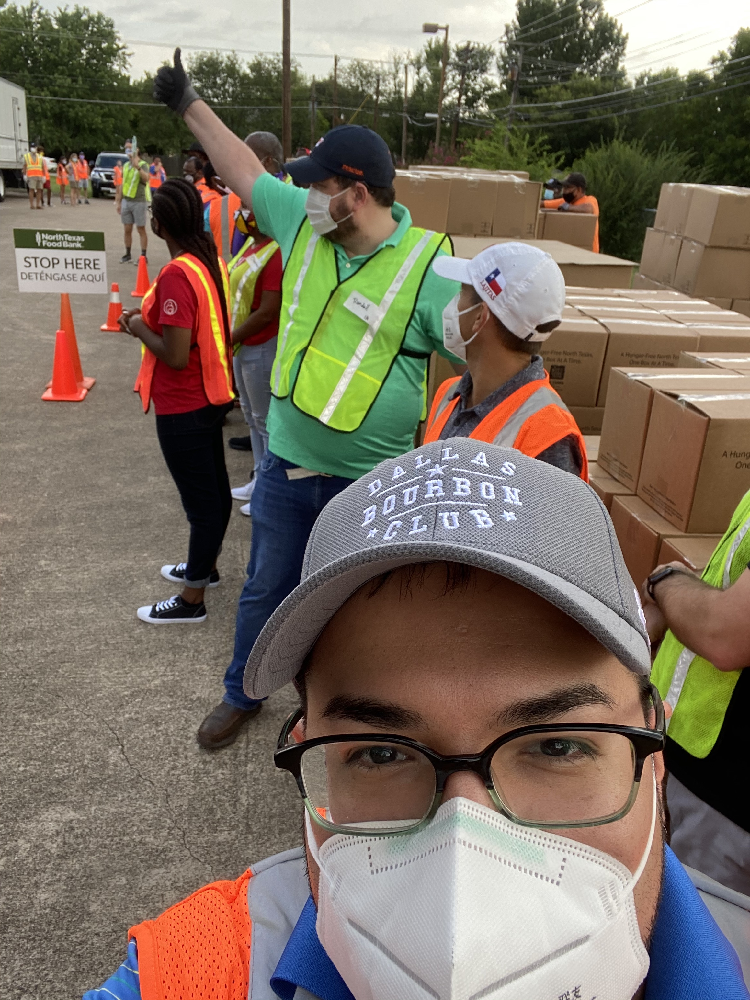

DBC North Texas Food Bank - Volunteer Hours
As you all know a group of ten DBC members helped volunteer last week at the NTFB Mobile Pantry donation. To set the scene, I got a text from Daniel Palos that 45 cars had lined up an hour before the pantry's donations actually began. That means there is some serious need in our community. Jeff Underwood was part of the volunteer effort and brings you this recap. I'll let Jeff take it from here.
While raising donations and writing a checks to worthy non-profits is great, ten of DBC's best gathered, suited up and gloved to provide hands-on support to Dallas county's most needy last Friday. In continuance with the North Texas Food Bank's service to the community during the Covid-19 pandemic, Club members extended it's partnership with NTFB by handing out food at Jireh's Tabernacle Worship Center in Mesquite, TX on July 31.

Following NTFB & OSHA safety protocols, drivers didn't leave their vehicles in the drive up line, and popped their trunks to allow for contactless receipt of life-sustaining boxes of food and other nourishment. Mostly cloudy skies and a good breeze only added to the already great mood everyone was in when we got there.
Split into distribution teams, Club members integrated and made new friends with members of the church who were distributing. NTFB staff were super helpful (and thankful) our Club helped make sure they could focus on keeping the pallets of freshness coming, and handle the logistics of traffic and maximizing space. By the end of the morning, we'd handed out well over 200 boxes each of fruits/veggies, canned/boxed goods, and whole milk.
We don't know the stories of the men and women that received a box of food, or a supply of milk. We don't know if they were working, when they'd had their last meal, or if they could pay all of their bills at home. But we in the Dallas Bourbon Club do know humanity. The line of cars wrapped around the block at the crack of dawn gave a strong visual of the need that exists in our community. And even behind the masked faces behind closed car windows, the eyes of the citizens we served told the story of their appreciation. The thumbs-up and prayer hands they gave as we loaded their vehicles, replaced the smiles we couldn't see and the hugs we couldn't give out. But at the end of the day...it was just as palpable.
Mahatma Ghandi said, “A nation's greatness is measured by how it treats its weakest members". This also holds true for how we, the men and women of Dallas Bourbon Club, impact our neediest of neighbors.